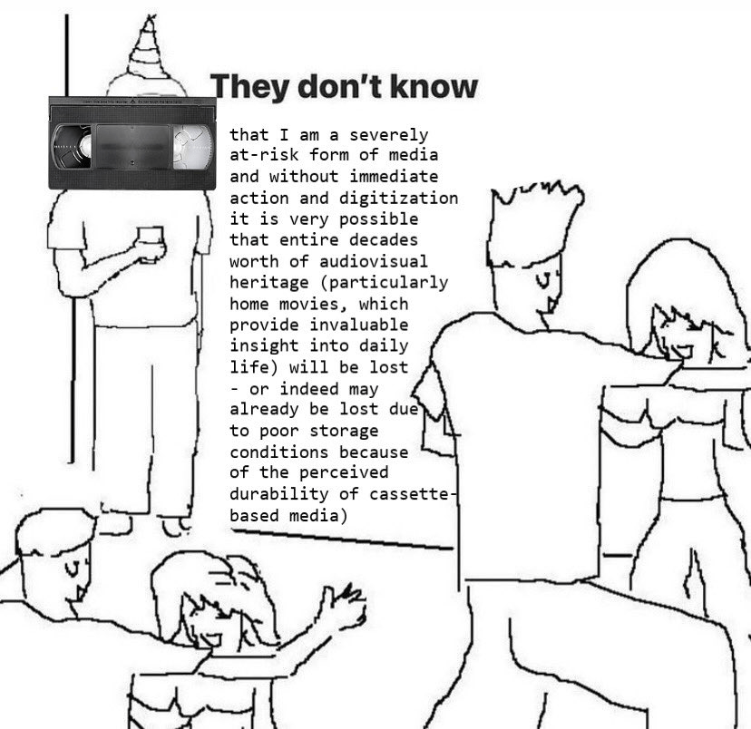
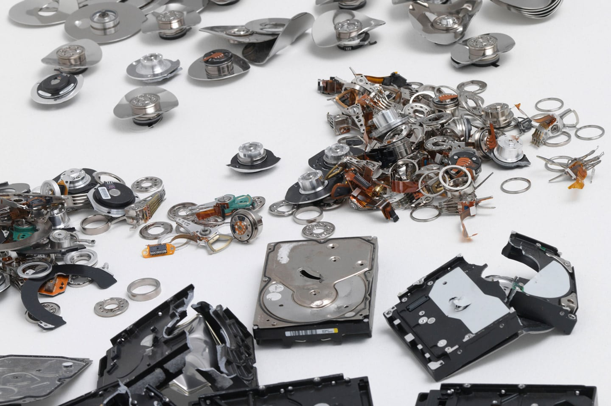

Abstract
We as humanity produce incredible amounts of digital data. According to research conducted by International Data Corporation in 2018, it predicted that the Global Datasphere will grow from 33 Zettabytes (ZB) in 2018 to 175 ZB by 2025. This is a part of the progress that is impossible to revert. Another irreversible process is entropy: an all-consuming natural force that undermines systems and brings chaos and randomness. As a designer – person whose profession implies constant process and production of huge amounts of data – I feel the urgency of bringing up the problem of entropic forces and data pollution awareness among community. By questioning how creative field can find a way to work together with digital entropy instead of against it in order to fight data pollution I investigate particular cases of artists dealing with entropy in their works and look for advantages of it.
Introduction
Everything starts to decay as soon as it’s created, eventually ceasing to exist. Such a process is defined by entropy, a natural force that has been here since the creation of the universe. Throughout history and into the digital age, humanity, and the virtual world it created turned out to be helpless against the ubiquitous chaotic forces of entropy. But what happens when forces of nature collide with a man-made (un)natural digital?
While digital pollution refers to all forms of pollution generated by new technologies, in this thesis I will use the “digital realm pollution” term as a collective concept that includes algorithmic, data & information pollution (which in itself consists of more specific cases, definitions and examples of pollution) and refers to the pollution of digital spaces, in particular, such as World Wide Web(1) The World Wide Web (WWW), commonly known as the Web, is an information system enabling documents and other web resources to be accessed over the Internet. and data servers(2). A data server (DS) is a software program/platform used to provide database services like storing, processing and securing data. These database services are consumed by other software programs or components. Sometimes the computer hardware, where the database is running, is also referred to as a database server.
In simple terms, data refers to anything digital we see or hear. Once structured, raw data turns into information: digital photos, audio and video files, texts, facts and figures, and any information that's stored in or used by a computer. Essentially, computers represent data as binary values that employ two numbers: 1 and 0. The smallest unit of data is called a “bit,” and it represents a single value. Additionally, a byte is eight bits long.
Describing entropy as a destructive force that brings only chaos, we are used to seeing it as something negative that prevents us from building new systems and keeping existing ones in order. Although fundamentally different concepts, it is possible to draw parallel between Hindu goddess Kali which represents passage of time, destruction and rebirth and entropy as they both represent natural processes of change and transformation, the cycle of death and rebirth, and are seen as a symbols of the power of time and the inevitable passing of all things. Even though goddess Kali is often portrayed as fearsome dark destructive creature, it also seen as a mother figure.(3)https://www.worldhistory.org/Kali/ Perhaps adopting similar attitude towards entropy would help society treating entropy with a bit more understanding and question if we should really treat natural forces as an enemy. How can creative field find a way to work together with digital entropy instead of against it in order to fight data pollution?
Chapter on the Poetics of Entropy
As an example, consider how regularly entropy manifests in our daily lives without us even realizing it. How frequently do we muse about the convenience of never having to recharge our phone or computer again? Or the ideal scenario of being able to clean and organize our living spaces once and for all? The reasons for these unachievable scenarios are rooted in the forces of entropy. When we question how our rooms become disorganized despite minimal use, or why it becomes increasingly difficult to locate a specific shirt in a cluttered wardrobe, the blame can be placed on entropy.
Murphy’s Law states, “Anything that can go wrong, will go wrong.”(4)https://www.cs.cmu.edu/~fgandon/miscellaneous/murphy/ Although this “law” cannot be scientifically verified or discredited, some interpret it as a simplified expression of the Second Law of Thermodynamics, also known as entropy. The Third Law of Thermodynamics posits that complete order is practically unattainable. “Entropy is sort of like Murphy’s Law applied to the entire universe.”(P. Atkins) This means that the universe is inherently chaotic, making predictions and assumptions difficult due to the persistent presence of high levels of randomness. However, there is a liberating beauty in letting go and taking a chance, a thrill made possible by entropy.
Entropy is proportional to the quantity of matter in a system; thus, the bigger the amount of data, the more susceptible to entropy forces it will be. In other words: the vaster the system, the more susceptible it will be to chaos. Entropy as a phenomenon can be found in various areas, from thermodynamics to computer science to human life. It affects all aspects of our daily lives while often staying hidden and unnoticed. However, in any given context entropy is essentially a measure of disorder, nature's tendency to eventually turn everything into chaos and decay. Already in the 19th century, Scottish physicist William Thomson and German physicist Rudolf Clausius developed the second law of thermodynamics which states that the total entropy of a system either increases or remains constant in any spontaneous process; but it never decreases6. With that law, scientists established that entropy – chaos, randomness, and decay – is an irreversible phenomenon that can be fought against and slowed down, but never fully stopped.
The forces of entropy operate underneath the surface of the world, staying in the darkness, hidden, like an invisible to a human eye opponent and oppressor. These processes undermine every known system, eventually turning it into chaos or dissolving it entirely, providing space for new systems to be built. Digital entropy could be seen in different areas, from data degradation to problems with data preservation and cryptography. In the digital realm, entropy is related to the accumulation of digital waste and the degradation of digital systems over time.
Not even modern technology is immune to the forces of nature. As a society wishing to excel in various fields, for instance, space exploration, we constantly need to fight off entropy in a face of cosmic radiation. Cosmic radiation is one of the most common causes of technology malfunction(T. Onion), it tends to flip bits. Just like radiation induces human DNA breaks, it also turns data 0s into 1s and vice versa, making data corrupted and inaccessible, leaving it to rot and pollute the digital realm. In digital creative fields, such as graphic design, photography, and video, entropy also refers to the randomness and disorder of the bits that make up a digital file. Remaining unobserved, these processes of digital entropy disturb the system and render it unstable. The above implications suggest that entropy is one of the main causes of digital realm pollution, as it has a tendency to turn order into chaos and decay.
Chapter on Data Physicality
We should see data as something physical and fragile. Even though it’s still impossible to hold or touch it literally, it has a weight and takes up space not only in the digital but also in the physical world. One important aspect of data is the fact that its existence is in a way invisible and therefore often worthless without a physical interpreter and/or carrier. While having not quite literal weight, data remains intangible due to the lack of its material form. We can’t see literal data, only computers' interpretation of bits. We can’t feel its weight in our hands, only see how much space it takes on a carrier. We've gotten so comfortable and slothful living in a digital realm with new 5G Internet connection faster than ever, exchanging information of different sizes, from 100Mb pages of PDFs to high-quality 3 hours movies of 80Gb, we are completely unaware and lack understanding of the physical aspect of it: how it travels through kilometers of fiberglass with (almost) the speed of light,(5)https://www.nai-group.com/optical-fiber-technology-how-it-works/ where our endless social media posts are stored, or who’s owning data centers and hardware our data is resting at, or how more and more physical data centers that are being built have a geopolitical and environmental impact.
Storage of data is a much more complex issue than we realize. According to scientists at Nanyang Technological University’s School of Computer Science and Engineering, storage could be on the way to becoming the next fossil fuel. For many users, the problem of digital storage stays hidden under the surface even though many of us will be faced with it sooner or later. The discomfort of the necessity of dealing with the problem results in a fast solution such as simply buying more storage capacity, rather than staying with the trouble in order to have a better understanding of different aspects of the issue that would, perhaps, result in a profound understanding and a long-term solution. Once again, the user opts not to deal with entropy and abandons the idea of storing information in physical devices. Instead, in recent years the vast majority of users have chosen to let a third party handle the storage issue, its management, and data security.
A new buzzword emerges – "cloud". The metaphorical aspect of the word “cloud” can often be misleading making the unaware user think of it as something lacking physicality, something “out there in the air”, something weightless, a magical space where data lives safely and can be easily retrieved at any time we want. Unlike the clouds we see in the sky, the storage cloud can be touched, or at least many of the things that comprise the cloud. It is an entire industry with a hierarchy similar to that of feudal Europe where land is the complex infrastructure of physical hardware consisting of fiber optics, cables, satellites, and warehouses filled with computers. The cloud, however, is not tied down to a specific country with its’ own rules and regulations, it is a global relatively new apparatus. Although there are standards, alliances, and organizations responsible for the regulations and security of the cloud, many of them focus solely on security and accessibility. Considering our overpopulation and lack of resources as a result, we should manage and regulate lands more carefully and pay closer attention to the newly arising problem of the limitation of physical storage of data.
3D render of “Gigafactory” by Tesla Motors Approximate size to compare, “Gigafactory” by Tesla MotorsThe problem of physical storage capacity is so serious it prompted research from IBM to find a way to store data on a single atom. They went as far as proving that it is possible to write and read 0s and 1s even on atomic sub-particles. Yet with the current exponential growth of data produced, storing it all we simply won’t have enough atoms in the next 345 years.(6)https://blog.seagate.com/intelligent/world-run-data-storage-capacity/
“What evaporates is agency and ownership: most of your emails, photos, status updates, business documents, library and voting data, health records, credit ratings, likes, memories, experiences, personal preferences, and unspoken desires are in the cloud, on somebody else’s infrastructure.”(J.Bridle) With remote data centers becoming increasingly popular and us as a community trusting and depending on them more and more - it makes me think of how we completely ignore the fact that data is being literally and figuratively further and further away from the owner. In a sense, our possession of the data is diminished and, as a result, we put it in danger of being stolen, lost, and re-used by others. In that way, with little understanding and management of our own data, we contribute to pollution.
Data pollution refers to the presence of unwanted or inaccurate information in a data set. This can take many forms, such as errors in data entry, incorrect data storage, or incomplete data sets. It occurs through other means, like bias within algorithmic pollution or manipulation during data collection, or data breaches, among others. The problematic nature of data pollution stems from the risks tied to inaccuracies and poor decision-making based on the data that can skew the results of data analysis and cause false conclusions to be drawn. In the case of a data set containing a large number of errors, for example, it can prove challenging to extract meaningful insights from the data which leads to issues related to data preservation and archiving. When digital data is polluted, it can lead to data degradation and to the loss of critical information or the inability to access old files. This can make it difficult or impossible to display and preserve works of art, design, and other digital media. In a modern digitalized society, where often pieces of information exist exclusively digitally (news articles, blogs, photos, e-mails, medical reports, and prescriptions) the problem of information accessibility and longevity is especially relevant, yet somehow stays ignored by the general public. Sarah Kessler writes, “the problem with digital… is that it requires active upkeep. Most computers don't have the floppy disk drives that were standard 15 years ago. Nor do they run the same operating systems or software used to create documents saved to floppies — even if the data is recovered, it may look more today like a garbled mix of symbols than your first novel written in WordPerfect.”(7)Sarah Kessler, Gigged: The End of the Job and the Future of Work
Meme found on the Internet, author unknownA simple example illustrating data & info pollution would be content over saturation. It’s a phenomenon of the digital era where creating, sharing, and consuming all different kinds of content has never been faster and easier. A polluting aspect of oversaturation is the overproduction of content that has little value to society (ex. commonly used product advertisements), yet consumers are subjected to excessive levels of it. It is becoming increasingly difficult to navigate our digital realm as it is cluttered with useless information.
Times Square, USA, circa 2014-2017One might wonder, doesn’t entropy decrease the amount of data in the data sphere, therefore, solving a problem? Research conducted by the International Data Corporation in 2018, predicted that the Global Datasphere will grow from 33 Zettabytes (ZB) in 2018 to 175 ZB by 2025. A zettabyte is a trillion gigabytes. Now let’s multiply those 175 times. As of December 2022, we have already produced and shared 94ZB of data.(8)https://techjury.net/blog/how-much-data-is-created-every-day By the end of 2022, only about 70% of the world population has access to the Internet. This percentage also keeps growing which suggests that in the future the exponential growth of the amount of data produced and exchanged will accelerate even more. The issue of staying connected, and making something fast, easily shareable, and accessible has been an issue of the past decade. An upcoming generation of designers will be confronted with the effects of the tech boom in terms of the enormous amount of structured and unstructured data produced that will be an inaccessible polluter perturbed by entropy unless properly archived and maintained. However, entropy doesn’t solve the problem of exceeding amounts of data and the limitations of storage. Instead, it contributes to the problem of digital pollution.
“The cloud doesn’t just have a shadow; it has a footprint."(J. Bridle). Data is the new currency and fuel of the modern economy, and just like the fossil fuels of the old economy, it also pollutes our environment with a digital footprint becoming a very tangible physical one. With the exponential growth of data produced so grows the need for physical capacity to accommodate it. So grows the amount of e-waste.
Large-scale data centers consume massive amounts of energy to power and cool the servers. The energy consumption of these centers contributes significantly to greenhouse gas emissions and contributes to the issue of global warming. One could see how this vicious cycle unwraps itself, leading us to a disaster.
Additionally, the construction and disposal of data centers create a significant amount of electronic waste. Electronic waste is a growing concern as it contains toxic substances that can harm the environment and pose a risk to human health. The improper disposal of electronic waste leads to the release of toxic substances into the soil and water, causing long-term environmental damage.
The location of data centers is also a significant geopolitical issue, as countries with lower energy costs and less stringent environmental regulations often become popular locations for data center construction. This leads to the transfer of wealth and resources from developed countries to developing countries, exacerbating the economic divide between the two countries, but also social class difference within less developed countries18.
Chapter on Ways to Cope
Entropy is a ubiquitous concept that manifests itself in different mediums and interpretations. As a result, I have looked into the manifestations of entropy in art and how artists deal with it through creative approaches.
 "B/NdAlTaAU" (2015) by Revital Cohen and Tuur Van Balen, photo by Jenz ZieheOne particularly impressive visual representation of entropy is the art piece "B/NdAlTaAU" (2015) by Revital Cohen and Tuur Van Balen. The piece consists of 40 kilograms of destroyed hard drives sourced from a data destruction service. The hard drives are a mountain of shiny deformed bricks that were scrapped out of the guts of computers. Mined out of the soil, designed in the United States, made in China, and destroyed in England, the labor starts in reverse, dissolving the virtual into the fake from the other end of the consumption chain. Metals and rare earth minerals are mined from the pile of hard drives and reconfigured back into mineral form. Neodymium (Nd) magnets are shredded with a water jet, tantalum (Ta) is filed out of capacitors, and the gold (Au) is recovered with acids. The aluminum (Al) platters – still holding their ones and zeros – are melted and recast in a sand mold. An artificial ore emerges from the earth, unexpectedly black.
Cohen and Van Balen seize the concept of entropy with their imaginative flair and showcase it to the world by embodying its essence. Through this piece, they illustrate that chaos and decay are not the only outcomes of entropy. Instead, entropy can lead to something new and fundamental, a return to its original form. It is possible that entropy is actually striving towards a return to the normal state of things, and it is humanity that is uncomfortable with the naturally chaotic state of the universe.
Hito Steyerl's "In Defense of the Poor Image" (2009) is an exemplary representation of an artist's thoughts and reflections on decaying data. According to Steyerl, a "poor image" is a digital visual with poor resolution and quality that is often inaccessible or that has been downloaded and re-edited multiple times. She argues that the proliferation of low-resolution images represents a new form of entropy in the digital world, as images become degraded and lose their original quality and meaning. However, she also argues that these "poor images" have the potential to create new forms of meaning and cultural significance, as they circulate and are reinterpreted by different communities and cultures.
Steyerl compares poor images to the imperfect cinema in the Third Cinema Manifesto, For an Imperfect Cinema, by Juan Garcia Espinosa, written in the 1960s. In his manifesto, Espinosa reflects on the new media and defends poorly crafted amateur videos. He predicted that technological progress and accessibility would eventually "jeopardize the elitist position of traditional filmmakers and enable some sort of mass film production: an art of the people." Espinosa does not undermine the importance of technical and artistic skills, instead, he found a way to see endless new sources of inspiration in imperfections of re-edited, re-used poor visuals that lose legibility and initial meaning somewhere in the chaos of poorly managed archives and the modern Internet. These visuals are given a whole new meaning as they are being reused, therefore losing their status as useless polluters.
Steyerl's "In Defense of the Poor Image" can be seen as an argument for the transformative power of digital images and entropy. By highlighting the limitations of traditional forms of representation and celebrating the dynamic and decentralized nature of digital images, Steyerl provides a compelling vision of how the poetics of entropy can be used to create new forms of meaning and cultural expression in the digital world.
In "God is Not Cast Down: Art, Church, and Factory," Kazimir Malevich explores the idea of entropy through the lens of art, religion, and industry. From an entropy perspective, the essay can be understood as a meditation on the forces of disorder and decay that exist in the world, and on the role of art in mediating and transforming these forces. A sense of acceptance can be found in Kazimir Malevich's essay. Though the artist opposes the rise of new systems (creation of new socialist states), he "proposed that the artist relax, that the artist gives up the ambition of shaping the permanent flow of the material world". Instead, Malevich preached that laziness and inaction would release the entropic forces that have true revolutionary power.” as B. Groys writes. Not only Malevich encourages readers to embrace and come to terms with the entropic forces, but the artist praises entropy as a limitation that, as he believes, contributes to artistic practice. Malevich gives an example of God that created a universe - an “example of the divine perfection”. However, it turns out humans are not perfect, for they have sinned. “A system without limits is also without defects.” writes Malevich, explaining that a flawless system doesn’t exist, and all that is left to do is embrace limitations in a face of entropy.
Malevich's sense of inevitable resignation is reminiscent of the desperate rebelliousness of Gustav Metzger, a visionary artist and radical thinker born in 1926 in Nuremberg. In his 1960 artist manifesto, Metzger referred to his art as “a desperate last-minute subversive political weapon and attack on the capitalist system (an attack also on art dealers and collectors who manipulate modern art for profit)”. He coined the term Auto-Destructivism (not to be mistaken with Deconstructivism) which describes a movement or style in art that emphasizes self-destruction and the rejection of traditional artistic values. The term has since been used to describe a wider range of artistic practices that challenge conventional ideas about the creation and preservation of art, and prioritize process and change over static, finished objects. Metzgers’ works were often ephemeral, such as art demonstrations where he painted nylon with acid which caused nylon to disintegrate. In these works, the materials artist used were often destroyed over time or through an action taken by the artist or the audience. This emphasis on the temporary impermanence of the artwork was a political and social statement about the transient and fragile nature of our world and our relationships with it. This idea holds relevance in our modern digital era as well, showing the fragility of the relationship between the human and un-human extension of us – data.
Conclusion
As we navigate the complex digital landscape, we must acknowledge the weight of data and its insubstantiality. Constantly traveling through wires, from one computer to another, data is like an elusive beast, incomprehensible to us. It will always remain subject to entropy, and there’s no point in fighting that. While entropy is often associated with destruction and loss, it brings balance to the universe. The forces of entropy and the need to constantly fight it off are exactly what makes life possible, diverse, and ever-changing. It is what makes us try harder, adapt, and improve.
However, just like plastic pollution, man-made digital pollution also persists in the form of lost and inaccessible data. We can "recycle" data by finding a new use for it, but we should also rethink and evaluate the trustworthiness of the digital realm. Instead of blindly believing in technical progress, we should consider the material physical archiving that has proven to be more reliable over time.
Metzger's ideas have inspired me to consider a radical notion: the conscious collective act of forgetting. In this approach, individuals and communities intentionally choose to let go of certain information or memories. In the digital realm, this means deleting or discarding outdated, meaningless, or irrelevant data, such as narcissistic selfies, fake news, or cat pictures.
Given the entropic forces of digital decay, such as bit rot or hardware obsolescence, this approach could prove to be an effective solution for managing limited resources and physical storage space, while also reducing the environmental impact of data centers and e-waste. By embracing digital consciousness and practicing regular digital "hygiene," individuals can make a significant impact by decluttering their personal storage devices and cloud accounts.
In the creative field, understanding the nature of entropy and its positive applications can help to reduce environmental impact, minimize digital waste, and establish more sustainable and resilient digital systems. By contributing to a more sustainable and equitable digital realm, we can support the long-term health and well-being of our planet and its inhabitants. However, it is important to consider the ethical implications of forgetting in relation to preserving cultural memory and information, and to acknowledge the responsibility of individuals and organizations in maintaining access to digital data.
Citations
Atkins, P. W. (2003). Galileo's finger: The ten great ideas of science. Oxford University Press.
Babel. (2019, January 15). Auto-destructive art manifesto (1959) - Gustav Metzger. 391.org. Retrieved February 25, 2023, from https://391.org/manifestos/1959-auto-destructive-art-manifesto-gustav-metzger/
Bridle, J. (2023). New dark age: Technology and the end of the future. Verso.
Bulao, J. (n.d.). How much data is created every day in 2023? Techjury. Retrieved February 25, 2023, from https://techjury.net/blog/how-much-data-is-created-every-day
Burrington, I. (n.d.). Strange Geopolitics of the International Cloud [web log]. Retrieved from https://www.theatlantic.com/technology/archive/2015/11/the-strange-geopolitics-of-the-international-cloud/416370/.
Groys, B. (n.d.). Poetics of entropy: The post-suprematist art of Mladen Stilinović - Journal #54 April 2014 - e-flux. e-flux. Retrieved February 25, 2023, from https://www.e-flux.com/journal/54/59839poetics-of-entropy-the-post-suprematist-art-of-mladen-stilinovi/
Kessler, S. (2019). In Gigged: The gig economy, the end of the job and the future of work. Essay, Random House Business Books.
MacKenzie, S. (2014). Film manifestos and global cinema cultures: A critical anthology. University of California Press.
Malevič, K., & Švecov, P. (2005). Bog Ne Skinut: Iskusstvo, Cerkovʹ, Fabrika (God Is Not Cast Down: Art, Church, Fabric) PSH Print.
Onion, T. (2013, November 19). Protecting high-tech devices from Cosmic Rays.
University of Saskatchewan | News. Retrieved February 25, 2023, from https://news.usask.ca/articles/research/2013/protecting-high-tech-devices-from-cosmic-rays.php
Paulsen, J. (n.d.). Could the World Run Out of Data Storage Capacity? [web log]. Retrieved from Could the World Run Out of Data Storage Capacity?
Reinsel, D., Gantz, J., & Rydning, J. (n.d.). The Digitization of the World From Edge to Core. Retrieved February 25, 2023, from https://www.seagate.com/files/www-content/our-story/trends/files/idc-seagate-dataage-whitepaper.pdf
Sterling, B. (n.d.). Digital Decay [web log]. Retrieved from https://bruces.medium.com/digital-decay-2001-b0db0ca4be3c.
Steyerl, H., In defense of the Poor Image - Journal #10 November 2009 - e-flux. e-flux. Retrieved February 25, 2023, from https://www.e-flux.com/journal/10/61362/in-defense-of-the-poor-image/